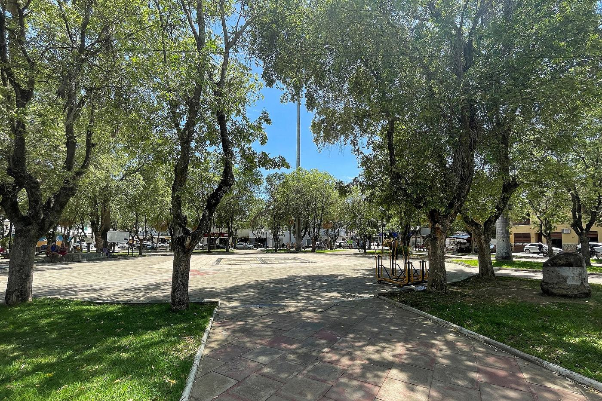
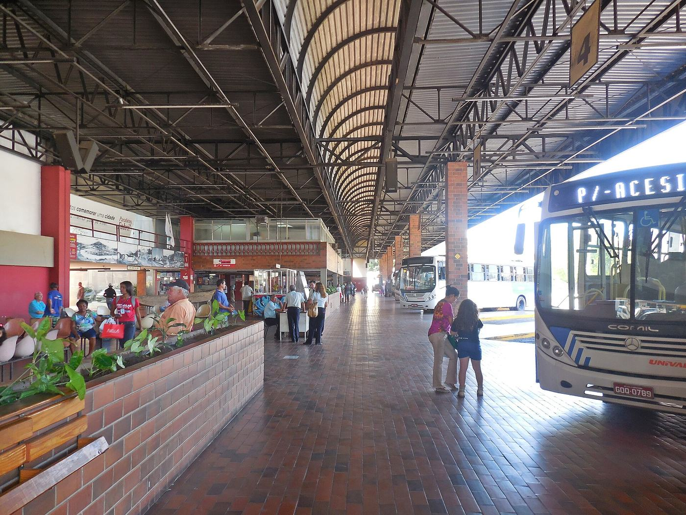

Placar ponderado de segundo turno. A margem de 95% da diferença sob amostragem aleatória simples é ±4,17 pontos.
Segundo turno no interior, base de 1.217 entrevistas — 60,7% da amostra. A contribuição do interior para o saldo nacional é zero.
Municípios presentes nas três ondas com a mesma cota de entrevistas em cada uma. É um painel fixo, público e previsível.
Segundo turno com a distribuição de renda da PNAD Contínua no lugar da distribuição da amostra. Uma margem trocada, cinco pontos evaporados.
Há inconsistências documentais e transparência insuficiente. Não há, nos arquivos examinados, prova de fabricação ou de escolha enviesada de cidades — testamos e a hipótese caiu.
Cap. 01
A diferença cabe num dado que falta
A margem de ±2 publicada pelo instituto descreve uma proporção isolada no pior caso sob amostragem aleatória simples. Ela não é a incerteza da diferença Lula−Flávio e não incorpora, por si, cotas, conglomerados, pontos de fluxo nem pesos.
48Lula (PT)
VERSUS
43Flávio (PL)
40 × 32
A margem AAS da diferença é ±3,70; seria necessário efeito de desenho de cerca de 4,68 para o intervalo tocar zero. É um saldo bem mais robusto que o do segundo turno.
45 × 36
Excluindo branco, nulo e não sabe. Esse denominador não deve ser misturado com os 40×32 sobre o total da amostra.
48 × 46
Flávio é rejeitado por 48% e Lula por 46%. Guarde este par: no capítulo 02 ele se inverte.
A vantagem é positiva por pouco
Tratando as duas preferências como categorias da mesma amostra, a margem de 95% da diferença é ±4,17 p.p. O intervalo do saldo de cinco pontos vai de +0,83 a +9,17. Sob essa hipótese simplificada, não é correto chamar automaticamente de empate técnico.
O resultado muda com deff modesto
A coleta usa estratos, seleção de municípios, pontos de fluxo, cotas e ponderação. Se o efeito de desenho da diferença for 1,44 ou maior, o intervalo inclui zero. É plausível, mas não demonstrável sem pesos, estratos e conglomerados.
Var(pL − pF) = [(pL + pF) − (pL − pF)²] / n
MOE95 = 1,96 × √[(0,48 + 0,43 − 0,05²) / 2.004] = 4,17 p.p.
deff-limite = (5 / 4,17)² = 1,44
deff de conglomerado (Kish) = 1 + (m − 1)ρ, com m = 6 ⇒ ρ-limite = 0,088
O que 1,44 significa no chão
O anexo territorial mostra que a coleta é feita em blocos de seis entrevistas por setor censitário (cap. 05). Com conglomerados desse tamanho, o efeito de desenho de Kish é 1 + (m−1)ρ. Para chegar a 1,44 basta uma correlação intraclasse de ρ = 0,088 — valor baixíssimo para vizinhos de um mesmo setor censitário, que compartilham renda, escolaridade e ambiente político. Já apagar os oito pontos do primeiro turno exigiria ρ = 0,736, o que seria absurdo. Fato a álgebra e o tamanho do bloco. Hipótese o valor real de ρ, que só o instituto pode calcular.
Conclusão calibrada
Lula lidera numericamente. A liderança é significativa somente sob a hipótese de amostragem aleatória simples. No desenho realmente usado, a conclusão sobre significância permanece indeterminada porque o instituto não publicou deff, variância por conglomerado, distribuição dos pesos ou tamanho amostral efetivo.
| Rodada | Lula | Flávio | Saldo | Leitura prudente |
|---|---|---|---|---|
| Jun/2025 | 47 | 38 | +9 | Vantagem ampla |
| Jul/2025 | 48 | 37 | +11 | Vantagem ampla |
| Dez/2025 | 51 | 36 | +15 | Pico da série |
| Mar/2026 | 46 | 43 | +3 | Convergência |
| Abr/2026 | 46 | 45 | +1 | Equilíbrio |
| 12–13/mai | 45 | 45 | 0 | Empate pontual |
| 20–21/mai | 47 | 43 | +4 | Diferença pequena |
| 17–18/jun | 47 | 43 | +4 | Estabilidade |
| 22–23/jul | 48 | 43 | +5 | Flávio estável; Lula +1 |
De junho para julho: +1 para Lula e zero para Flávio no segundo turno; no primeiro turno, Lula vai de 41 a 40 e Flávio de 31 a 32. Todas essas variações de uma onda estão dentro do erro. A série sustenta polarização estável, não uma queda identificável de Flávio na rodada.
Cap. 02
A vantagem de Lula é metropolitana
A página 32 do relatório traz um recorte que nenhuma manchete usou: natureza do município. Capital e região metropolitana somam 787 entrevistas; o interior, 1.217. Separados, são duas eleições diferentes — e só uma delas está decidida.
Ponto de fluxo · interior

Aritmética, não opinião
O saldo nacional Flávio−Lula é de −5 pontos. Decomposto por natureza do município, −5,11 vêm de capital e região metropolitana e 0,00 vem do interior. Não é uma interpretação: é a média ponderada dos dois grupos reproduzindo o número que a Folha publicou.
Capital + Região Metropolitanan=787 · 39,3% da amostra
−5,11 pp
Interiorn=1.217 · 60,7% da amostra
0,00 pp
Saldo nacional Flávio−Lulatopline publicado
−5 pp
Escala: a metade do trilho equivale a 20 pontos percentuais de contribuição. A decomposição é descritiva — mostra de onde vem aritmeticamente o saldo, não por que ele existe.
38 × 35
No interior, a distância de primeiro turno é de apenas três pontos. Em capital e região metropolitana, é de quinze: 43 × 28. O “oito pontos de vantagem” nacional é a média de duas realidades muito distintas.
46 × 48
A manchete nacional diz que Flávio é o mais rejeitado (48% contra 46%). No interior, os números se invertem: Flávio 46, Lula 48. Em capital e RM, Flávio 51 e Lula 44.
39% sem nome
Na pergunta espontânea, 39% dos eleitores do interior não citam nenhum nome, contra 34% nas metrópoles. Lula é citado por 28% e Flávio por 17%. Há um estoque enorme de eleitor sem candidato formado.
O que isso não prova
“Interior” aqui é a categoria do próprio Datafolha (município que não é capital nem integra região metropolitana), não uma definição do IBGE aplicada por nós. Também não se pode ler o empate no interior como equivalente ao resultado que uma eleição real produziria: as bases são ponderadas, o desenho não é aleatório simples e o intervalo de 95% do interior sob AAS vai de −5,3 a +5,3. O que se pode afirmar com segurança é aritmético: sem as metrópoles, o saldo nacional desaparece.
Cap. 03
A metade do Brasil que não tem partido
1.006 dos 2.004 entrevistados dizem não ter nenhum partido. É o maior recorte isolado da pesquisa — maior que o Sudeste, maior que os católicos, o dobro do PT. Nesse bloco, Flávio ganha por treze pontos e Lula é o mais rejeitado do país.
LulaFlávio
deff-limite 5,44
A vantagem de treze pontos de Flávio entre os sem-partido tem intervalo de 95% sob AAS de +7,4 a +18,6. Seria preciso um efeito de desenho de 5,44 — muito acima do plausível — para o sinal desaparecer. É um dos achados mais resistentes da rodada, ao lado de Nordeste, fundamental e evangélicos.
Preferência sem lembrança
O mesmo grupo que dá 48% a Flávio no segundo turno cita espontaneamente Lula (15%) e Flávio (13%) quase no mesmo patamar, e 53% não citam ninguém. É preferência ativada por estímulo, não identidade consolidada. É o eleitorado mais volátil e o mais decisivo.
O risco simétrico
Um bloco que decide por rejeição pode virar para qualquer lado. Ele rejeita Lula (55%) mais do que rejeita Flávio (39%), mas 15% dele vota em branco ou nulo no segundo turno — mais que a média nacional de 9%. Metade da eleição está em disputa entre um candidato e a abstenção, não entre dois candidatos.
Cap. 04
Para onde vai o voto quando a eleição afunila
Entre o primeiro e o segundo turno, cerca de dezoito pontos são liberados: catorze de candidatos eliminados e quatro de indecisos que decidem. Os totais das barras são o que o Datafolha publicou. A repartição entre elas, não — e é por isso que cada fita aqui está hachurada.
| Cenário | Lula | Adversário | Branco/nulo | Não sabe | O que a comparação mede |
|---|---|---|---|---|---|
| A · Lula × Flávio | 48 | 43 | 9 | 1 | Referência |
| B · Lula × Caiado | 47 | 40 | 11 | 2 | Adversário perde 3; branco/nulo sobe 2 |
| C · Lula × Zema | 48 | 40 | 10 | 2 | Adversário perde 3; branco/nulo sobe 1 |
Três perguntas, a mesma amostra, os mesmos pesos, a mesma semana. É o experimento mais próximo de uma medição de transferência que existe nesta pesquisa — e ele não é estimativa, é topline publicado.
Lula não se move
47, 48 e 48 nos três cenários. O teto de Lula não depende de quem está do outro lado. Quem varia é o bloco adversário — o que significa que a disputa de segundo turno é uma disputa interna da oposição, não uma disputa pelo eleitor de Lula.
3 pontos que só Flávio tem
O bloco anti-Lula rende 43 com Flávio e 40 com Caiado ou Zema. A diferença não vai para Lula, que fica onde estava: vai para branco e nulo, que sobe de 9 para 11 e 10. É a fidelidade da base bolsonarista, observada e não suposta.
A premissa da matriz
Se a base de Flávio cruzasse para Lula, Lula subiria quando o adversário fosse outro. Ele não sobe. Isso sustenta a premissa ideológica do diagrama abaixo — base própria fiel, cruzamento para o campo oposto próximo de zero, vazamento indo para a não-escolha — sem precisar assumi-la por fé.
Transferência estimada de 1º para 2º turno
Barras: fato · fitas: inferência
destino Lula
destino Flávio
branco, nulo e não sabe
hachura = fluxo estimado, não medido
Afluentes do mesmo rio
Pelo modelo, Caiado entrega cerca de 2,2 dos seus 4 pontos a Flávio, Renan 1,9 de 3, Zema 1,8 de 3, Cury 1,1 de 2 e Daciolo praticamente o ponto inteiro. Nenhuma dessas candidaturas chega a um dígito no primeiro turno, mas somadas valem mais que a distância do segundo.
5,1 pontos que não voltam
O maior fluxo isolado que não vai para candidato nenhum é o branco e nulo que permanece branco e nulo. Somado ao que Caiado, Zema e Renan perdem para a não-escolha, o branco/nulo sobe de 8 para 9 justamente quando a eleição deveria estar polarizando.
1,0 × 0,6
Dos três pontos de “não sabe” do primeiro turno, sobra um no segundo. Quem decide pende levemente para Lula. Ou seja: o ganho de Flávio não vem do indeciso — vem inteiramente da direita que se dispersou no primeiro turno.
O limite deste diagrama
Qualquer matriz que respeite as margens publicadas reproduz os mesmos totais. A nossa parte de premissas explícitas — base própria fiel, Daciolo e Cury majoritariamente para Flávio, Samara para Lula, branco/nulo alimentado sobretudo pelas candidaturas de direita eliminadas — e o ajuste apenas garante coerência aritmética, não veracidade. A razão de consolidação em torno de 1,5:1 é robusta à escolha da prior, porque é imposta pelas margens; o corte candidato a candidato não é. Com a matriz de transição que o instituto tem e não publica, esta seção seria medida em vez de estimada.
Cap. 05
O Brasil não está empatado consigo mesmo
O placar nacional esconde duas coalizões sociais quase espelhadas. A clivagem mais forte não é uma oscilação de um ponto: é renda, escolaridade, região, religião, cor, idade e posição no mercado de trabalho.


LulaFlávio
| Ocupação | Lula | Flávio | Base | Contribuição ao saldo | Leitura |
|---|---|---|---|---|---|
| Assalariado com registro | 40 | 46 | 497 | +1,49 | Carteira assinada pende a Flávio |
| Assalariado sem registro | 49 | 39 | 127 | −0,63 | Informal pende a Lula; base pequena |
| Funcionário público | 47 | 42 | 136 | −0,34 | Intervalo inconclusivo |
| Autônomo, liberal e bico | 43 | 47 | 478 | +0,95 | Quase empate, base grande |
| Empresário | 27 | 65 | 88 | +1,67 | Sinal forte, base pequena |
| Desempregado | 54 | 34 | 74 | −0,74 | Base pequena |
| Dona de casa | 61 | 34 | 167 | −2,25 | Sinal forte |
| Aposentado | 60 | 35 | 294 | −3,67 | Sinal forte; coerente com 60+ |
| Recorte | Flávio−Lula | Base | IC95% AAS | Deff p/ zero | Contribuição |
|---|---|---|---|---|---|
| Nordeste | −33 | 552 | −40,5 a −25,5 | 19,53 | −9,09 |
| Católicos | −17 | 988 | −22,9 a −11,2 | 8,44 | −8,38 |
| Fundamental | −25 | 594 | −32,5 a −17,5 | 11,14 | −7,41 |
| Mulheres | −10 | 1.045 | −15,7 a −4,3 | 3,06 | −5,21 |
| Capital + RM | −13 | 787 | −19,6 a −6,4 | 3,88 | −5,11 |
| Parda | −10 | 916 | −16,2 a −3,8 | 2,62 | −4,57 |
| Evangélicos | +29 | 495 | +21,0 a +37,0 | 13,12 | +7,16 |
| Sem partido | +13 | 1.006 | +7,4 a +18,6 | 5,44 | +6,53 |
| Branca | +10 | 715 | +3,1 a +16,9 | 2,09 | +3,57 |
| Interior | 0 | 1.217 | −5,3 a +5,3 | — | 0,00 |
| Acima de 10 SM | +6 | 51 | −20,8 a +32,8 | 0,05 | ruído |
As dimensões se sobrepõem: a mesma pessoa pode ser mulher, nordestina, católica, parda e do interior. Somar os eixos seria erro grosseiro. “Deff para zero” é quanto o desenho precisaria inflar a variância para o intervalo tocar zero — quanto maior, mais resistente é o sinal. Recortes com base abaixo de 200 (10+ SM, desempregados, empresários) descrevem tendência, não medida.
Diagnóstico público
O eixo material é nítido, mas o maior buraco isolado de Flávio não é renda: é religião. Católicos custam −8,38 pontos de contribuição; evangélicos devolvem +7,16. As duas maiores bases da pesquisa — católicos (988) e sem-partido (1.006) — puxam em direções opostas com força quase idêntica. Isso descreve coalizões, não causalidade: sem microdados não é possível dizer se religião explica renda, se região explica religião, nem construir fluxos individuais a partir de totais agregados.
Cap. 06
As mesmas 139 cidades, mês após mês
O anexo territorial das três rodadas mostra um padrão que ninguém comentou: os municípios praticamente não mudam, e a cota de entrevistas de cada um é idêntica em maio, junho e julho. O Brasil que o Datafolha mede é um painel fixo, publicado, de 139 cidades.
6 por setor
Em julho, 328 das 331 linhas do anexo trazem exatamente 6 entrevistas; três trazem 12. São Paulo recebe 132 entrevistas em maio, em junho e em julho. Rio, 72 nas três. Salvador, Fortaleza, BH e Brasília, 36 cada, sempre.
Bloco de seis é conglomerado. Pela fórmula de Kish, basta ρ = 0,088 de correlação intraclasse dentro do setor para o efeito de desenho chegar a 1,44 — o valor que faz o 48×43 tocar o empate.
25 de 27
Amapá e Roraima não recebem nenhuma entrevista — juntos, 0,62% do eleitorado. O Amazonas, ao contrário, aparece com 2,99% da amostra para 1,78% do eleitorado; Mato Grosso, com 0,60% para 1,67%.
23,4% em 11 cidades
As onze maiores concentram 468 entrevistas. As 30 menores cidades do painel somam 360 entrevistas para 368 mil eleitores — cada entrevista ali “carrega” pouco mais de mil eleitores; na média nacional, 78.766.
O mapa que a Folha publica todo mês
Cada círculo é um município do anexo de julho. Horizontal: voto em Bolsonaro no 2º turno de 2022 (TSE). Vertical: eleitorado atual (escala logarítmica). Área: entrevistas em julho. Cor: região. Círculos cheios estão nas três ondas; translúcidos, não.
| Município | UF | Entrevistas | Eleitores | Bolsonaro 2022 |
|---|
Ponto de fluxo · terminal

Bairro não é unidade amostral — setor é
Dentro das cidades fixas, os setores censitários giram. De maio para junho, 77,0% dos setores se repetiram; de junho para julho, apenas 20,9%. Só 44 setores aparecem nas três rodadas. Ou seja: o painel é de municípios, não de setores — e a crítica de “mesmos bairros” só se sustenta pelo geocódigo de 15 dígitos, não pelo rótulo do bairro (que repete 51,7%).
Inconsistência objetiva
O setor 130083905000015, em Caapiranga/AM, aparece duas vezes no anexo de julho: uma como Centro e outra como Nossa Senhora das Graças, com seis entrevistas em cada linha. Em junho, esses bairros estavam ligados a setores terminados em 014 e 015. Pode ser erro de digitação, agregação ou outro problema documental; o instituto precisa corrigir ou explicar.
Registro 16/05 · campo 20–22/05 · divulgação 22/05
334 linhas, 331 setores únicos, 139 municípios, 2.004 entrevistas.
Registro 13/06 · campo 17–19/06 · divulgação 19/06
331 linhas, 331 setores únicos, 139 municípios. 120 dos municípios e 77,0% dos setores vinham de maio.
Registro 18/07 · campo 22–24/07 · divulgação 24/07
331 linhas, 330 setores únicos, 139 municípios. 137 municípios repetem junho; só 69 setores repetem.
A antecipação vem da repetição, não do prazo
Fato o anexo territorial de cada rodada não é público antes do campo. O próprio registro de julho, protocolado em 18/07, declara que “a relação completa dos municípios e bairros pesquisados será anexada ao registro até o dia seguinte à data de publicação da pesquisa, conforme Resolução 23.600/2019 do TSE, no art. 2º, §7º”. O mapa de julho entrou no ar depois do campo, não antes.
Fato o que é público antes do campo é o registro: datas, tamanho da amostra, contratante, valor, questionário e o plano amostral em termos gerais.
Inferência a previsibilidade da geografia não depende disso. O anexo de junho, público desde 19/06, já continha 137 dos 139 municípios de julho. Quem quisesse saber onde a rodada seguinte seria coletada não precisava esperar o anexo novo: bastava ler o antigo.
Consequência de auditoria como o anexo só chega depois da divulgação, não existe prova pública de que a amostra estava definida antes do campo. É isso que o depósito prévio sob resumo criptográfico resolveria.
Cap. 07
Testamos a suspeita. Ela não sobreviveu.
A hipótese natural diante de um painel fixo é a mais grave: teriam escolhido cidades convenientes e travado nelas? A pergunta merece resposta com dados, não com adjetivo. Cruzamos os 139 municípios com o resultado oficial do 2º turno de 2022, voto a voto.
O painel não é anti-Bolsonaro
Somados, os 139 municípios votaram 1,78 ponto mais em Bolsonaro que o Brasil. A mediana municipal do painel é 53,67% para Bolsonaro. Ponderando cada cidade pelo número de entrevistas que ela recebe — que é como o painel efetivamente pesa —, o terreno fica em 49,33%, praticamente colado ao resultado nacional de 49,10%.
Traduzindo: não há evidência de que o Datafolha tenha escolhido cidades para forçar um resultado. Quem quiser sustentar essa acusação precisa de outra prova, porque esta não existe nos números.
Previsível não é o mesmo que enviesado
O problema real não é quais cidades foram escolhidas. É que são as mesmas, com as mesmas cotas, e que o anexo de cada rodada, ao ser publicado, entrega a geografia da rodada seguinte. Um painel fixo tem virtude estatística, porque reduz a variância entre ondas e melhora a comparabilidade, e tem um custo de integridade, porque torna a medição previsível para quem lê o anexo anterior.
Nenhuma das duas propriedades está declarada no relatório. Não há uma linha sobre protocolo de rotação, probabilidade de inclusão do município, ou por que Amapá e Roraima nunca entram.
| Mais bolsonaristas | Bolsonaro 2022 | Mais lulistas | Bolsonaro 2022 |
|---|---|---|---|
| Corupá/SC | 78,4% | Aurora/CE | 15,6% |
| Joaçaba/SC | 72,6% | Dormentes/PE | 21,1% |
| Rio Branco/AC | 72,5% | Remígio/PB | 21,8% |
| Criciúma/SC | 72,0% | Joaquim Pires/PI | 22,1% |
| Navegantes/SC | 70,1% | Afogados da Ingazeira/PE | 22,1% |
| Marília/SP | 69,4% | Brotas de Macaúbas/BA | 22,1% |
A leitura que importa
O terreno onde o Datafolha mede o Brasil é um terreno que Bolsonaro venceu em 2022 na maioria das cidades — 78 de 139, com 1.080 das 2.004 entrevistas. É exatamente por isso que os 43% de Flávio devem ser lidos como desempenho abaixo do terreno herdado, e não como sabotagem amostral. A distância entre o que o território deu em 2022 e o que a pesquisa mede em 2026 é a medida do trabalho que falta — e é um trabalho de chão, não de tribunal.
Cap. 08
A amostra é mais pobre que o país que ela mede
O Datafolha publica o próprio perfil de renda: metade da amostra ponderada declara renda familiar de até dois salários mínimos. A PNAD Contínua, que mede rendimento domiciliar com microdado e peso calibrado, diz outra coisa. Trocar essa régua — e só ela — muda o placar.
A mesma faixa, três réguas
Fato · distribuição medida
até 2 SM
2 a 5 SM
5 a 10 SM
10+ SM
47,9 × 42,8
Aplicando as próprias margens de renda do Datafolha ao próprio cruzamento publicado, chegamos a Lula 47,9 e Flávio 42,8 — o 48×43 divulgado. A máquina de cálculo reproduz o resultado oficial antes de qualquer alteração. Só depois disso faz sentido trocar a distribuição.
16,6 pontos
É a distância entre a fatia de até 2 SM na amostra (52,0%) e nas pessoas de 16 anos ou mais da PNAD (35,4%). Como Lula faz 56×36 nessa faixa e perde em todas as outras, essa diferença de composição não é neutra: ela é praticamente todo o saldo nacional.
Troque a régua de renda e as linhas se cruzam
Inferência · sensibilidade de margem única| Régua de renda | Até 2 SM | 2T Lula | 2T Flávio | 2T saldo | 1T Lula | 1T Flávio | 1T saldo |
|---|---|---|---|---|---|---|---|
| Datafolha · bases do cruzamento | 52,05% | 47,91 | 42,84 | Lula +5,07 | 39,77 | 32,59 | Lula +7,18 |
| Datafolha · perfil ponderado (pág. 13) | 52,08% | 47,88 | 42,83 | Lula +5,05 | 39,71 | 32,60 | Lula +7,11 |
| PNAD · domicílios (VD5001) | 42,93% | 46,58 | 44,20 | Lula +2,38 | 38,94 | 33,28 | Lula +5,66 |
| PNAD · pessoas de 16 anos ou mais | 35,44% | 45,36 | 45,29 | empate · Lula +0,07 | 37,93 | 33,95 | Lula +3,98 |
| PNAD · pessoas 16+ (renda habitual, VD5007) | 35,12% | 45,29 | 45,33 | Flávio +0,04 | 37,82 | 34,01 | Lula +3,81 |
A unidade importa. Se a régua correta for o domicílio, a vantagem de Lula cai pela metade. Se for a pessoa de 16 anos ou mais — que é exatamente o universo declarado da pesquisa, “eleitores com 16 anos ou mais” —, ela desaparece. As duas variantes de rendimento domiciliar da PNAD (efetivo e habitual) dão o mesmo desenho, o que indica que o resultado não depende da escolha da variável.
A direção do erro tem precedente
Na véspera do segundo turno de 2022, o Datafolha publicou Lula 52 × Bolsonaro 48 em votos válidos (registro BR-08297/2022). A urna deu 50,90 × 49,10 — número que recalculamos, voto a voto, no capítulo 06. A diferença publicada era o dobro da real, e o erro foi todo na mesma direção que a composição de renda corrige. Isso não prova que o erro de 2022 tenha sido causado pela renda: prova que a direção do viés de composição e a direção do erro observado coincidem, e que testar essa margem é obrigação de quem lê pesquisa.
O que este exercício não prova
Não prova que Flávio esteja empatado com Lula hoje. Prova que o “Lula +5” não sobrevive à troca de uma única margem por uma fonte oficial mais recente. Renda declarada em ponto de fluxo não é rendimento domiciliar medido pela PNAD; 3,9% da amostra não declarou renda; e reponderar uma margem isolada ignora que renda, região, escolaridade e religião andam juntas. Com microdados e pesos individuais — que o instituto não publica — o cálculo correto seria uma calibração multivariada, não esta.
Cap. 09
A amostra é plausível. Os pesos são invisíveis.
Sexo, idade e região ficam próximos do eleitorado do TSE. A fragilidade não é uma aberração demográfica evidente: é não ser possível reconciliar amostra bruta, metas registradas, distribuição ponderada e resultado final.
| Variável | Meta registrada | Datafolha ponderado | TSE | Leitura |
|---|---|---|---|---|
| Homens | 48% | 48% | 47,18% | Próximo |
| Mulheres | 52% | 52% | 52,82% | Próximo |
| 16–24 | 13% | 13% | 12,52% | Próximo |
| 25–34 | 20% | 18% | 19,05% | Abaixo da meta; pesos não explicados |
| 35–44 | 20% | 20% | 19,74% | Próximo |
| 45–59 | 25% | 25% | 25,42% | Próximo |
| 60+ | 22% | 24% | 23,27% | Acima da meta; próximo do TSE |
| Sudeste | — | 42% | 42,02% | Colado ao TSE |
| Nordeste | — | 28% | 27,58% | Próximo |
| Sul | — | 15% | 14,48% | Próximo |
| Norte + Centro-Oeste | — | 16% | 15,91% | Próximo |
| Faixa de renda familiar | Datafolha ponderado | PNAD domicílios | PNAD pessoas 16+ | Distância | Leitura |
|---|---|---|---|---|---|
| Até 2 SM | 52,05% | 42,93% | 35,44% | +16,6 pp | Amostra muito mais pobre que o universo declarado |
| Mais de 2 a 5 SM | 35,22% | 35,69% | 39,23% | −4,0 pp | Faixa mais próxima entre as três réguas |
| Mais de 5 a 10 SM | 10,08% | 14,23% | 16,91% | −6,8 pp | Classe média sub-representada |
| Mais de 10 SM | 2,65% | 7,15% | 8,42% | −5,8 pp | A PNAD tem 3,2× mais gente aqui |
Distância = Datafolha menos PNAD pessoas de 16 anos ou mais, que é o universo declarado da pesquisa (“eleitores com 16 anos ou mais”). Enquanto sexo, idade e região ficam a menos de um ponto do TSE, a renda se afasta em 16,6 pontos na faixa que mais decide o resultado. O efeito disso no placar está no capítulo 07.
Perfil clássico coerente
Não aparece desvio grosseiro de sexo, idade ou macro-região. Isso reduz uma hipótese simples de viés composicional, embora não teste a seleção dentro do ponto de fluxo.
50% até 2 salários
A meta registrada era 48%; o perfil ponderado fica em 50%. A PNAD anual dá referências diferentes conforme a unidade: cerca de 42,9% dos domicílios ou 35,4% das pessoas de 16 anos ou mais. “Renda familiar declarada” não é idêntica a nenhuma delas.
Reponderar é sensibilidade
Como Lula faz 56×36 até 2 SM e Flávio 50×39 entre 2–5 SM, trocar apenas a distribuição marginal de renda tem direção previsível. Mas, sem microdados e interações, isso não produz o “resultado real” e não prova viés.
O que o relatório não permite calcular
Não há peso final individual, mínimo/máximo/CV dos pesos, efeito de desenho de Kish, tamanho efetivo, identificador de estrato ou conglomerado, probabilidade de seleção no ponto, taxa de abordagem, elegibilidade, recusa, substituição, distribuição por dia e horário ou duração. A checagem mínima de 20% do material de cada entrevistador é positiva, mas verifica execução; não resolve cobertura nem não resposta. Nada disso é ilegal: a norma vigente simplesmente não exige.
Cap. 10
A intenção de voto vem primeiro. O verbo é edição.
O principal mérito do instrumento é a ordem: espontânea, estimulada, rejeição e segundo turno vêm antes do bloco político-temático. As perguntas sobre prisão, tarifas e imprensa não podem ter contaminado os toplines que as antecedem. O problema aparece depois, na forma de algumas perguntas e na tradução jornalística de outras.
Ordem
Bom
Voto antes do tema
Protege o placar principal de priming posterior. É uma escolha metodológica correta e precisa constar do veredito.
P5
Carga
Prisão domiciliar
O enunciado informa “razões humanitárias” e condições de saúde antes de perguntar casa versus prisão. A justificativa pode legitimar uma das alternativas; uma forma mais neutra separaria conhecimento do fato e opinião.
P7
Compressão
Proibição de visita
A pergunta encadeia a decisão à leitura de uma carta e depois pede se o ministro “agiu bem ou mal”. A causalidade comprimida no enunciado pode soar punitiva e omite o conjunto dos fundamentos da decisão.
P9–P11
Assimetria
Versões de Lula e Flávio
Há alternância de vozes, mas as tarefas não são simétricas: P10 detalha a culpa atribuída por Flávio e mede o esforço de Lula; P11 detalha a acusação de Lula e pergunta se os EUA querem beneficiar Flávio.
P12
Arquitetura
Um único culpado
Trump, Lula, Flávio e Eduardo são lidos separadamente. A família Bolsonaro divide menções entre dois nomes; “todos” e “nenhum” são espontâneos. A forma força monocausalidade para um fenômeno de múltiplos atores.
P13
Alternativas
Retaliar, ceder tudo ou negociar
“Atender todas as condições” é uma formulação extrema; “negociar” ocupa a posição intermediária e socialmente moderada. O resultado de 74% pela negociação precisa ser lido à luz dessa assimetria.
Arquivo
Conta-gotas
Mais perguntas do que resultados
O PDF oficial de 33 páginas publica voto, rejeição, segundo turno e cruzamentos. O instrumento segue por governo, tarifas, influência da imprensa, futebol, apostas e religião. Ao menos três dezenas de medidas substantivas ficam fora; algumas foram liberadas depois, em matérias.
Versão
Resíduo
P4 não aparece
A numeração salta de P3 para P5. Pode ser resíduo de versionamento, não vício de campo; justamente por isso a versão aplicada e seu histórico deveriam ter hash e controle públicos.
“Lula 48%, Flávio 43%”
G1, 24/07. Aritmeticamente correto e sem afirmar “fora da margem”. Falta o contexto de desenho: deff, incerteza da diferença e bases dos recortes. É compressão jornalística, não falsidade.
“Inferno astral de Flávio”
Folha, análise de 24/07. É interpretação causal. Entre junho e julho, Flávio ficou em 43% no segundo turno e subiu de 31% para 32% no primeiro. A rodada não identifica deterioração mensurável.
“Para 52%, Trump quer ajudar Flávio”
Folha, 26/07. O número existe. Mas a resposta veio depois de o entrevistado ouvir a acusação de Lula no próprio enunciado. O título transforma opinião pós-estímulo em crença aparentemente espontânea.
O recorte que ninguém publicou
Nas 33 páginas do relatório está o cruzamento por natureza do município — capital, região metropolitana e interior. Nenhuma das manchetes examinadas usou esse recorte. Não afirmamos intenção editorial: afirmamos o fato de que o dado que muda a leitura da eleição estava publicado e não foi noticiado, enquanto “inferno astral” foi.
Cap. 11
Onde se ganha voto no chão
Esta seção é assumidamente prescritiva e vale para qualquer candidatura que leia os mesmos números — inclusive a de Flávio Bolsonaro, que é quem o dado desafia. Cada movimento abaixo nasce de uma linha do relatório, com base amostral declarada. Não há aqui técnica de manipulação de pesquisa; há leitura de onde o eleitor está e do que ele responde.
Feira de Caruaru · PE
A regra de ouro desta seção
Campanha de rua em cidade média muda voto porque muda a conversa da cidade, não porque muda a pesquisa. Tentar “ocupar” pontos de fluxo para deslocar um instituto seria, além de indefensável, tecnicamente inútil: os setores giram entre ondas (79% novos de junho para julho), as cotas são de seis entrevistas por setor e a ponderação por sexo, idade, escolaridade e renda absorve concentração artificial.
O valor do mapa público é outro e é legítimo: ele diz onde o país é ouvido — e, portanto, onde a percepção nacional se forma primeiro.
Fazer a eleição no interior, não no aeroporto
1.217 das 2.004 entrevistas estão fora de capitais e regiões metropolitanas, e ali o placar é 45×45 no segundo turno e 38×35 no primeiro. Cada ponto ganho no interior vale 0,607 ponto nacional; cada ponto ganho na capital vale 0,393.
O painel dá o endereço: 38 municípios do anexo têm entre 50 e 200 mil eleitores, e mais 32 têm entre 20 e 50 mil. São 70 cidades que somam 840 entrevistas — 41,9% da amostra nacional — e onde uma agenda de campanha custa uma fração de um evento metropolitano.
Falar com quem não tem partido — e não pedir que tenha
1.006 entrevistados não têm partido nenhum. É a maior base da pesquisa, dá 48×35 a Flávio, rejeita Lula por 55% e, ainda assim, 53% dela não cita nenhum nome espontaneamente e 15% vai a branco/nulo no segundo turno.
O adversário desse bloco não é Lula: é a não-escolha. Discurso identitário-partidário aqui é ruído; o que converte é utilidade concreta, nome e número memorizáveis e um adversário nomeado — que já é rejeitado por 55% deles.
Fechar o buraco de 15 pontos entre lembrar e escolher
Na espontânea nacional, Flávio é citado por 17%; na estimulada, faz 32%. São quinze pontos que dependem de o entrevistador mostrar o cartão. Entre mulheres, 45% não citam ninguém; entre 16 e 24 anos, 46%.
Esse é um problema de presença física e repetição, não de posicionamento: quem é lembrado sem cartão é quem apareceu na semana. É exatamente o que uma campanha de chão produz e uma campanha de estúdio não produz.
Tratar o católico do interior como o maior déficit isolado
Evangélicos (n=495) dão +7,16 pontos de contribuição a Flávio; católicos (n=988) tiram −8,38. É o maior buraco líquido de toda a pesquisa, maior que o do Nordeste em base e quase igual em contribuição.
A conta é simples: consolidar ainda mais os 60% entre evangélicos rende pouco — a base já está próxima do limite. Reduzir a diferença entre católicos em cinco pontos vale mais que qualquer ganho adicional no segmento já convertido.
Disputar o trabalho, não a ideologia do trabalho
Assalariado com carteira dá 46×40 a Flávio; sem carteira, 49×39 a Lula; autônomos e bicos, 47×43 a Flávio; aposentados, 60×35 a Lula; donas de casa, 61×34.
Os dois maiores déficits ocupacionais (aposentados, −3,67; donas de casa, −2,25) são de renda fixa e cuidado, não de emprego. Uma agenda de reajuste previdenciário crível, fila de cuidado e custo de alimentos toca 461 entrevistas; uma agenda de empreendedorismo toca 88.
Brigar com a métrica, nunca com o número
Contestar “48×43” é perder: o número é fiel ao arquivo. O que é contestável e verdadeiro cabe em três frases: a margem publicada não é a margem da diferença; o efeito de desenho não foi publicado e bastaria 1,44 para o intervalo tocar zero; e o recorte por natureza do município — que existe no relatório — mostra 45×45 no interior.
“Inferno astral” é a extrapolação vulnerável: Flávio ficou estável em 43% e subiu de 31% para 32% no primeiro turno. Essa é a correção jornalística que se sustenta em qualquer mesa.
Usar o direito de acesso em vez de reclamar do resultado
Partido, federação, coligação, candidatura e Ministério Público Eleitoral podem exigir acesso ao sistema interno de controle, ao relatório entregue ao contratante, ao questionário aplicado e às planilhas e mapas amostrados. Isso é instrumento legal, não favor.
Três alvos documentais já estão maduros nesta rodada: a divergência de um dia no campo, a diferença de R$ 100 entre registro e nota fiscal e o setor duplicado em Caapiranga. Nenhum é escândalo; juntos, formam cadeia de custódia.
Comprar amostra que responde à pergunta certa
Com deff de planejamento de 1,5, são necessários cerca de 576 casos por recorte para erro próximo de ±5 pontos. Nesta pesquisa, o Sul tem 294, a faixa 35–44 tem 393, a de 5–10 SM tem 194 e a acima de 10 SM tem 51.
Uma pesquisa própria de 2.000 casos repetirá as mesmas limitações. Um diagnóstico com n≈6.000 e estratificação por natureza do município produziria interior e capital com precisão real — e é aí que a decisão de alocação de agenda se paga.
Limite honesto
Cruzamento agregado não é causalidade. Nada aqui prova que uma agenda no interior produz voto — prova apenas onde o eleitor está, quanto ele pesa no agregado nacional e o quão incerto é cada sinal. Uma campanha séria trata isto como hipótese testável com pesquisa própria e resultado publicado, não como receita garantida.
Cap. 12
Há matéria para correção e acesso. Não para acusação vazia.
A Resolução TSE 23.600, alterada pela 23.747/2026, exige precisão técnica para impugnar pesquisa. O caminho mais forte é separar inconsistências documentais demonstráveis de lacunas que a regra atual ainda permite.
Reconciliar a data final do campo
Relatório e anexo territorial dizem 22–23/07; registro e declaração dizem 22–24/07. Pedir retificação e logs por dia, com contagem de entrevistas, horários e versão do banco.
Reconciliar o valor da pesquisa
Registro e declaração: R$ 307.541,60. Nota fiscal: R$ 307.641,60. A diferença de R$ 100 é 0,033% — teste de consistência, não escândalo —, mas “valor e origem” e documento fiscal precisam coincidir ou ser explicados.
Corrigir o setor duplicado de Caapiranga
Solicitar o geocódigo correto de cada bairro e confirmar se foram 12 entrevistas em um setor, seis em cada um de dois setores, ou erro apenas no anexo.
Publicar o protocolo de rotação e seleção
118 municípios repetem nas três ondas com cota idêntica e duas UFs nunca entram. Pedir o plano amostral completo: probabilidade de inclusão do município, critério de estratificação, regra de rotação de setores e justificativa para a ausência de AP e RR.
Reconciliar os pesos
Solicitar distribuições bruta, meta e final, peso mínimo/máximo/CV, trimming, deff e n efetivo. O perfil final de 25–34 e 60+ não reproduz exatamente as metas registradas; pode ser arredondamento ou ajuste conjunto, mas exige papel.
Regular o intervalo registro–campo
O anexo territorial só é entregue depois da divulgação, conforme o art. 2º, §7º da Resolução 23.600/2019, de modo que hoje não há prova pública de que a amostra estava definida antes do campo. Propor o depósito do anexo no registro sob resumo criptográfico, com abertura na primeira divulgação e conferência do hash.
| Achado | Situação | Instrumento adequado |
|---|---|---|
| Datas, custo e geocódigo incoerentes | Deficiência documental objetiva a esclarecer | Pedido de correção/acesso; eventual impugnação técnica |
| Deff e pesos não públicos | A regra registra ponderação, mas não exige diagnóstico público completo | Acesso do legitimado + nova resolução ou lei |
| Painel municipal fixo sem protocolo declarado | Lícito; não há exigência de publicar regra de rotação | Mudança normativa; pedido de plano amostral |
| Anexo territorial entregue só depois da divulgação | Permitido pelo art. 2º, §7º da Res. 23.600; não há prova de que a amostra precedeu o campo | Depósito sob hash no registro, aberto na divulgação |
| Resultados temáticos fora do PDF público | O §7º-B mantém relatório completo reservado até depois da eleição, salvo ordem | Mudança normativa; não presumir infração |
| Ausência de taxas de abordagem e recusa no fluxo | Lacuna crítica do modo presencial | Nova obrigação de transparência |
Revisão incorporada à proposta
A minuta da Arvor passa a refletir a Resolução 23.747/2026: elimina a tolerância de relatório depois da primeira divulgação e a carência adicional de três dias; exige dados de abordagem e recusa para pontos de fluxo; cria validação de geocódigos únicos, protocolo de rotação e publicação da probabilidade de inclusão do município; e reconcilia data, custo e identificadores entre os documentos.
Cap. 13
Do PDF à conta, sem caixa-preta
Os seis documentos da pesquisa nacional estão preservados no acervo bruto do projeto. A auditoria compara os anexos territoriais de maio, junho e julho, valida geocódigos, recalcula a incerteza da diferença e cruza o painel com o eleitorado atual do TSE e com o resultado oficial de 2022.
Dois scripts, uma conta
scripts/datafolha-072026-audit.py lê os anexos territoriais, valida setores e recalcula margens.
scripts/datafolha-072026-campanha.py monta o painel municipal, agrega o eleitorado do TSE em streaming, transcreve os cruzamentos das páginas 24–33 e cruza tudo com o 2º turno de 2022.
scripts/datafolha-072026-renda.py lê o microdado da PNADC anual 2025 visita 1, calcula as faixas de rendimento domiciliar em salários mínimos e refaz os toplines trocando só a margem de renda.
Saídas auditáveis: analysis/datafolha_072026/audit.json, campanha.json, renda.json e o mapa municipal em CSV.
Fato, inferência, hipótese
Fato é transcrição documental ou cálculo reproduzível. Inferência é a explicação mais compatível com os fatos, sem identificação causal. Hipótese exige dado adicional.
Percentuais são arredondados pelo instituto; bases do relatório são ponderadas. Sem microdados e pesos individuais, nenhuma reponderação marginal é tratada como correção oficial ou “verdade” alternativa.
Fontes primárias e matérias examinadas
- Datafolha, relatório BR-01166/2026, 33 páginas, campo 22–23/07/2026 (páginas 24–33: cruzamentos).
- PesqEle/TSE, registro BR-01166/2026, registrado em 18/07/2026.
- Anexos territoriais BR-07489/2026 (maio), BR-09956/2026 (junho) e BR-01166/2026 (julho).
- TSE · Resolução 23.600 consolidada.
- TSE · Resolução 23.747/2026.
- Lei 9.504/1997, arts. 33–35.
- TSE · perfil atual do eleitorado (157.846.602 eleitores, competência jun./2026).
- TSE · resultados de 2022, votação por partido, município e zona.
- IBGE · PNAD Contínua anual 2025, visita 1 (microdado, rendimento domiciliar VD5001 e VD5007).
- Datafolha · véspera do 2º turno de 2022, registro BR-08297/2022.
- Folha · “Inferno astral...”.
- Folha · “Para 52%...”.
- G1 · segundo turno 48×43.
- Arvor · proposta atualizada de pesquisa auditável.
Limitações desta auditoria
A margem da diferença assume amostragem aleatória simples; o desenho real usa estratos, pontos de fluxo, cotas e ponderação. Sem pesos individuais, conglomerados e microdados não é possível calcular o efeito de desenho real. Repetição de município é repetição documental da unidade de seleção, não do mesmo entrevistado. O cruzamento com 2022 usa votos nominais válidos de PL e PT por município e ignora brancos, nulos e abstenção; ele descreve o terreno, não prevê comportamento em 2026. A categoria “interior” é a do próprio instituto. Dois municípios exigiram alias de grafia para casar com as bases do TSE (Santa Izabel do Pará e Alvorada do Oeste), documentados no script.
Fotografias sob licença livre, via Wikimedia Commons: rua 25 de Março, São Paulo — Otávio Nogueira, CC BY 2.0; Feira de Caruaru — Edudgarcia, CC BY-SA 4.0; terminal rodoviário de Coronel Fabriciano e Praça da Matriz de Conselheiro Pena — HVL, CC BY 4.0; foto oficial do senador Flávio Bolsonaro — Agência Senado; foto oficial do presidente Lula — Ricardo Stuckert/PR, CC BY 2.0. Os créditos completos, com URL de cada arquivo, estão em assets/datafolha_072026_creditos.json.